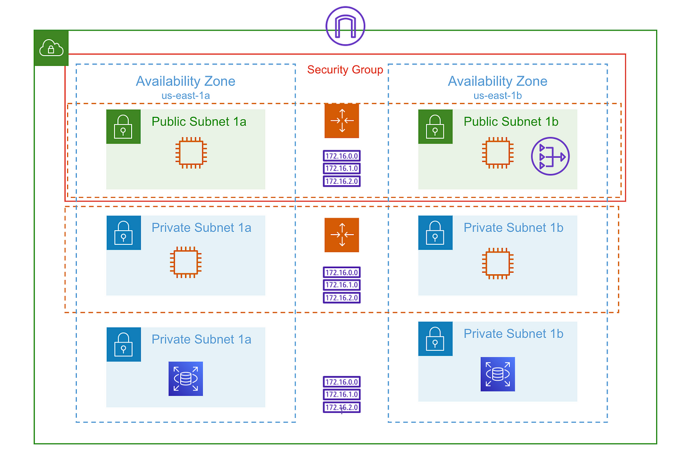

Introduction
The goal of this project is to deploy a scalable, highly available, and secure Java application on a 3-tier architecture and provide application access to end users from the public internet.

3-Tier Architecture Overview
Table of Contents
- Goal
- Pre-Requisites
- Pre-Deployment
- VPC Deployment
- Maven (Build)
- 3-Tier Architecture
- Application Deployment
- Post-Deployment
- Validation
Goal
The goal of this project is to deploy a scalable, highly available, and secure Java application on a 3-tier architecture and provide application access to end users from the public internet.
Pre-Requisites
- Create AWS Free Tier account
- Create GitHub account and create a repository to keep this Java source code
- Migrate Java source code to your own GitHub repository
- Create an account in SonarCloud
- Create an account in JFrog Cloud
Pre-Deployment
- Create Global AMI
- AWS CLI
- CloudWatch agent
- Install AWS SSM agent
- Create Golden AMI using Global AMI for Nginx application
- Install Nginx
- Push custom memory metrics to CloudWatch
- Create Golden AMI using Global AMI for Apache Tomcat application
- Install Apache Tomcat
- Configure Tomcat as Systemd service
- Install JDK 11
- Push custom memory metrics to CloudWatch
- Create Golden AMI using Global AMI for Apache Maven Build Tool
- Install Apache Maven
- Install Git
- Install JDK 11
- Update Maven Home to the system PATH environment variable
VPC Deployment
- Deploy AWS Infrastructure resources as shown in the above architecture
- Build VPC network (192.168.0.0/16) for Bastion Host deployment
- Build VPC network (172.32.0.0/16) for deploying Highly Available and Auto Scalable application servers
- Create NAT Gateway in Public Subnet and update Private Subnet associated Route Table accordingly
- Create Transit Gateway and associate both VPCs for private communication
- Create Internet Gateway for each VPC and update Public Subnet associated Route Table
- Deploy Bastion Host in the Public Subnet with EIP associated
- Create Security Group allowing port 22 from public internet
Maven (Build)
- Create EC2 instance using Maven Golden AMI
- Clone GitHub repository to VSCode and update the
pom.xmlwith Sonar and JFrog deployment details - Add
settings.xmlfile to the root folder of the repository with JFrog credentials and repo - Update
application.propertiesfile with JDBC connection string - Push code changes to feature branch of GitHub repository
- Raise Pull Request to approve and merge changes to Master branch
- Login to EC2 instance and clone the GitHub repository
- Build the source code using Maven arguments
-s settings.xml - Integrate Maven build with SonarCloud and generate analysis dashboard
3-Tier Architecture
Database (RDS)
- Deploy Multi-AZ MySQL RDS instance into private subnets
- Create Security Group allowing port 3306 from App instances and Bastion Host
Tomcat (Backend)
- Create private facing Network Load Balancer and Target Group
- Create Launch Configuration with Tomcat Golden AMI
- User Data to deploy .war artifact from JFrog into webapps folder
- Security Group allowing Port 22 from Bastion Host and Port 8080 from private NLB
- Create Auto Scaling Group
Nginx (Frontend)
- Create public facing Network Load Balancer and Target Group
- Create Launch Configuration with Nginx Golden AMI
- User Data to update
proxy_passrules innginx.conffile and reload Nginx service - Security Group allowing Port 22 from Bastion Host and Port 80 from Public NLB
- Create Auto Scaling Group
Application Deployment
- Artifact deployment handled by User Data script during Application tier EC2 instance launch process
- Login to MySQL database from Application Server using MySQL CLI client and create database and table schema (Instructions in README.md file in GitHub repo)
Post-Deployment
- Configure Cronjob to push Tomcat Application log data to S3 bucket and rotate logs
- Configure CloudWatch alarms to send E-Mail notification when database connections exceed threshold
Validation
- Verify administrator access to EC2 instances via session manager & Bastion Host
- Verify end user access to application from public internet browser